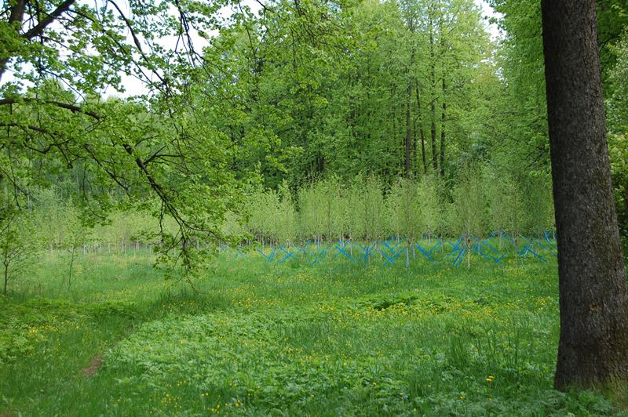

|  | Министерство культуры Российской Федерации Портал Культура.рф Проект «Образы России» |
Le musée-réserve naturel de Pouchkine (Zakharkovo)
Le bois des bouleaux

En face de la maison du domaine à l’époque de Pouchkin se trouvait le bois des bouleaux où toute la famille aimait boire du thé sur une grande clairière. Le bois a été replanté en 2005 en commémoration du 200ième anniversaire de l’arrivée de Pouchkin dans le domaine. On a planté plus de 1000 bouleaux.